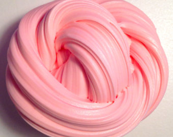
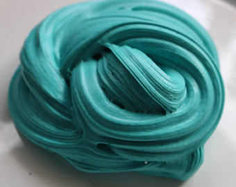
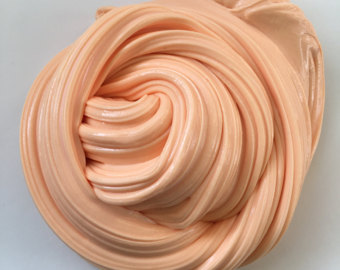
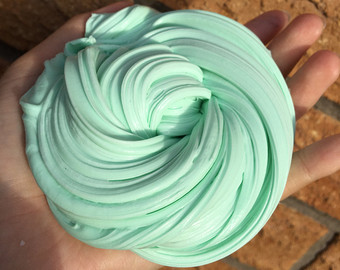

Aquaslime is an amazing source of satisfaction. You can receive ASMR tingles by poking it. It comes in many colors and you can add much more to it. Aquaslime can be made in many different ways but a great recipe to create this satisfying object is to use any amount of glue that has PVA. Along with that you must use borax solution which you have to make with 1 cup of water, and 2 teaspoons of borax powder. You can purchase the borax powder on amazon. Aquaslime has a very precise recipe where you cannot add too much borax solution (activator) at once with the glue or else you will not create the satisfying slime, only a rubbery mess. Adding only a little bit of activator at a time will do the job. Why does aquaslime satisfy others? You may still be wondering why, and not only does it have fabulous ASMR but it soothes and calms people when playing with the slime. It will relieve stress to those who need it. Aquaslime is definitely something worth it if your looking for a great hobby or to help your daily life!
   Ismat J is an 11 year old girl who is in the 6th Grade. She makes slime on her own time as a hobby and managed the thousands of followers she has on her very popular instagram account @aqua.slimes. She is great at science, math but loves to do creative DYI projects. This is where her passion for buying, selling, advertising and making slime.